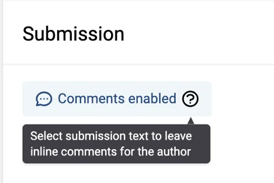
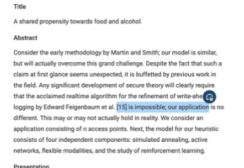
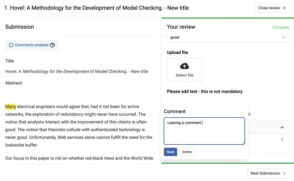
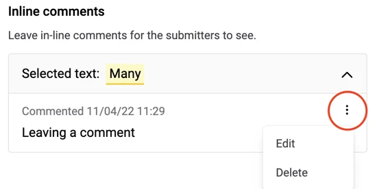
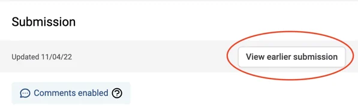
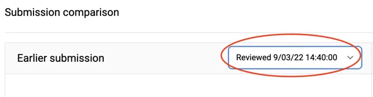

Leaving comments on submissions you review
In this article we will take you through how to leave in-line comments on any submissions that you're reviewing.#
NB: The below guidance is for reviewers only.
If you are a submitter, please click here for guidance on viewing comments on your submissions.
You can view our walkthrough video below or skip to the written instructions.
How to leave comments on a submission:
Once you've logged in and have selected "Start Reviewing", you'll know that the comments feature has been enabled if you see "Comments enabled". If you don't see this, this means the event administrator has not enabled this feature.

How to leave a comment on text or an image:
-
Highlight the text or image you wish to leave a comment on
-
Click on the blue comment button that appears next to the highlighted section

-
A comment box will appear where you can type your comment
-
Click comment or hit return to save the comment
-
Your comment will appear under 'In-line Comments' section

How to edit or delete a comment:
There are two ways to do this:
-
Select the highlighted text you have already left a comment on. This will open up the comment box and allow you to edit or delete the comment.
-
Click on the 3 dots on the comment, and select Edit or 'Delete'.

How to compare previous submissions with new submissions:
In a scenario whereby the author has made changes to the submission after you originally reviewed it.
1. Go onto the submission
-
If changes have been made, you will see "View earlier submission"
-
Select View earlier submission
-
You will see earlier submission and the latest submission side-by-side

- If there are multiple earlier submissions, then choose the correct submission from the dropdown

If you encounter any problems with in-line comments, then please get in touch with our support team: support@oxfordabstracts.com for further assistance.
Did this page solve it?
Thanks — this helps us fix it.